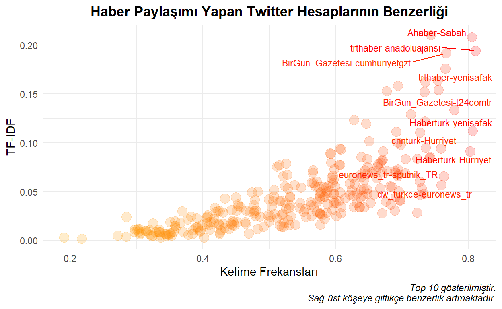

Uygulama için belirlemiş olduğum haber paylaşımı yapan 25 adet Twitter hesabının benzerlik sonuçları aşağıdaki gibidir.

Twitter hesaplarının benzerliğini ölçmek için atılan tweetleri ve yöntem olarak da kosinüs benzerliğini kullandım.
Kosinüs Benzerliği
Kosinüs benzerliği, metinler arasındaki vektörel uzaklığı ölçer. Kosinüs benzerliği yöntemi ile aslında trigonometrideki kosinüs fonksiyonu kullanılıyor. Metinler birer vektör olarak dikkate alınıyor ve iki vektörün birbirleri ile olan açısı ölçülüyor. Bu benzerlik, iki vektörün çarpımının iki vektörün boylarının çarpımına oranı olarak hesaplanır.
\(cos(\theta) = \frac{x.y}{||x||||y||} = \frac{\sum_{i=1}^{n}x_iy_i}{\sqrt{\sum_{i=1}^{n}x_i^2}\sqrt{\sum_{i=1}^{n}y_i^2}}\)
Basit bir örnek ile nasıl hesaplandığına bakalım.
\(x.y = 3*3 + 4*4 + 1*4 + 0*8 = 29\)
\(||x|| = \sqrt{3^2 + 4^2 + 1^2 + 0^2} = 5.09902\)
\(||y|| = \sqrt{3^2 + 4^2 + 4^2 + 8^2} = 10.24695\)
\(cos(x,y) = cos(\theta) = \frac{29}{5.09902*10.24695} = 0.5550303\)
Kosinüs açısı 0 olursa (\(cos(\theta) = 0\)), iki vektör arasında tam benzerlik vardır (\(cos(0) = 1\)).
Kosinüs açısı 90 olursa (\(cos(\theta) = 90\)), iki vektör arasında benzerlik yoktur (\(cos(90) = 0\)).
Manuel yapmak yerine R’da lsa paketi yardımıyla da kosinüs benzerliği bulunabilir.
as.numeric(lsa::cosine(x,y))
[1] 0.5550303Peki, metinlerde bu benzerlik nasıl hesaplanıyor? Kısa cevabı kelime frekansları ile. Bir örnek ile inceleyelim.
text1 <- "R programlama dilini öğreniyorum"
text2 <- "Python programalama dilini öğreniyorum"
Yukarıdaki örnekte dilini, öğreniyorum, programlama kelimeleri ortak; Python ve R kelimeleri farklıdır. Kelime frekanslarını birbirine denk gelecek şekilde yazarsak;
# dilini, öğreniyorum, programlama, Python, R
text1_n <- c(1,1,1,0,1)
text2_n <- c(1,1,1,1,0)
as.numeric(lsa::cosine(text1_n,text2_n))
[1] 0.75Görüldüğü üzere kosinüs benzerliği 0.75 ya da 75% çıkmıştır.
Uygulama
25 adet Twitter hesabına ait tweetlere (post12.xlsx) GitHub hesabımdan ulaşabilirsiniz. İlgili veri setinde sadece hesap adı ve atılan tweetler bulunmaktadır. Retweetler ise çıkarılmıştır.
accounts <- c(
"@Ahaber",
"@Haberturk",
"@ntv",
"@cnnturk",
"@BirGun_Gazetesi",
"@t24comtr",
"@cumhuriyetgzt",
"@yeniakit",
"@yenisafak",
"@Sabah",
"@trthaber",
"@anadoluajansi",
"@halktvcomtr",
"@tele1comtr",
"@bbcturkce",
"@FOXhaber",
"@gazetesozcu",
"@tgrthabertv",
"@gazeteduvar",
"@euronews_tr",
"@sputnik_TR",
"@dw_turkce",
"@Hurriyet",
"@solhaberportali",
"@DikenComTr"
)
Veriler aşağıdaki gibi çekilmiştir.
library(tidyverse)
library(rtweet) # tweet
library(tidytext) # düzenli veri formatı
library(stopwords) # Türkçe stop wordler
library(widyr) # tf-idf, kosinüs benzerliği
df <- data.frame()
for(i in 1:length(accounts)){
# n = Inf ile maksimum tweet sayısı çekilmiştir ki bu da 3250'dir.
# include_rts parametresi FALSE yapılarak retweetler analiz dışı bırakılmıştır.
timeline <- get_timeline(
user = accounts[i], n = Inf, include_rts = FALSE
)
df <- df %>%
bind_rows(timeline)
print(paste0(accounts[i]," hesabından ",nrow(timeline)," adet tweet çekildi."))
Sys.sleep(time = 1)
}
master <- df %>%
select(screen_name,text)
Tekrar çalıştırmamak için (73930 satırlık bir veri seti) kaydettiğim veri setini kullanıyorum.
master <- readxl::read_excel("tweets.xlsx")
Bu veri setinden url’leri (http’li) çıkaracağız.
Aynı zamanda, türkçe stop wordleri de çıkarmak faydalı olabilir. Stop wordler etkisiz kelimelerdir. Sık kullanılan kelimeleri de kapsar desek yanlış olmaz sanırım.
tr_sw <- stopwords(language = "tr", source = "stopwords-iso")
Kosinüs benzerliğini iki yöntemi baz alarak hesaplayacağız: Kelime frekansları ve TF-IDF.
master <- master %>%
unnest_tokens(output = "word", input = "text") %>% # kelimeler ayıklandı
filter(!(word %in% tr_sw)) %>% # stop wordler kaldırıldı
count(word, screen_name) %>% # kelimeler hesaplara göre saydırıldı
bind_tf_idf(word, screen_name, n) # TF-IDF hesaplandı
Kosinüs Benzerliği - Kelime Frekansları
Yukarıda da örneğini gördüğümüz üzere bu başlık altında kosinüs benzerliği kelimelerin frekansları kullanılarak bulunmuştur.
Kosinüs Benzerliği - TF-IDF
Term Frequency-Inverse Document Frequency’nin kısaltması olan TF-IDF için Terim Frekansı-Ters Doküman Frekansı diyebiliriz. Bu hesaplama, bir kelimenin doküman içerisindeki önemini gösteriyor. TF-IDF, TF ile IDF’in çarpımından oluşuyor.
TF: Kelimenin dokümandaki tekrar sayısının dokümandaki toplam kelime sayısına oranıdır.
IDF: Toplam doküman sayısının seçilen kelimenin geçtiği toplam doküman sayısına oranının logaritmasıdır. İlgili kelimenin diğer dokümanlardaki sıklığının artması DF değerini artırır; IDF değerini azaltır.
\(w_{i,j} = tf_{i,j}\ x\ log(\frac{N}{df_i})\)
\(tf_{i,j}:\) i’nin j’de geçme oranı
\(df_i:\) i içeren doküman sayısı
\(N:\) Doküman sayısı
Örnek: “çalarsaat” kelimesini inceleyelim. FOXhaber’in 30,402 kelimesi vardır. Seçtiğimiz kelime ise 261 defa geçmiştir. Bu durumda TF değeri 261/30,402 = 0.008584962 olur. 25 adet Twitter hesabı olduğu için 25 adet doküman vardır. Seçtiğimiz kelime sadece 1 dokümanda (~hesapta) geçmektedir. Bu durumda IDF değeri log(25/1) = 3.218876 olur. TF-IDF ise TF ile IDF’in çarpımıydı. Yani, 0.008584962 * 3.218876 = 0.02763393 sonucuna ulaşılır.
Sonuç
df_result <- master_freq %>%
inner_join(master_tf_idf, by = "item")
ggplot(df_result,
aes(x = similarity_freq, y = similarity_tf_idf, color = similarity_freq)) +
geom_point(alpha = .2, size = 4) +
ggrepel::geom_text_repel(
data = df_result %>%
arrange(desc(similarity_freq)) %>%
slice(c(1:10)),
aes(label = item), size = 3
) +
theme_minimal() +
theme(plot.title = element_text(face = "bold", hjust = 0.5),
plot.caption = element_text(face = "italic"),
legend.position = "none") +
scale_color_gradient(low = "orange", high = "red") +
labs(
title = "Haber Paylaşımı Yapan Twitter Hesaplarının Benzerliği",
caption = "Top 10 gösterilmiştir.\nSağ-üst köşeye gittikçe benzerlik artmaktadır.",
x = "Kelime Frekansları",
y = "TF-IDF"
)

Listenin tamamına aşağıdan ulaşılabilir. Liste, benzerlik oranı en yüksekten en düşüğe doğru kelime frekansına göre hesaplanan benzerliğe göre sıralanmıştır. En yüksek benzerliğe sahip hesaplar ~81% ile trthaber ve anadoluajansi; en düşük benzerliğe sahip hesaplar ise ~19% ile DikenComTr ve tgrthabertv olmuştur. Kelime frekanslarına göre benzerliğin yanında TF-IDF’i de hesaplamıştık. Buna göre, en yüksek benzerliğe sahip hesaplar ~21% ile Sabah ve yenisafak; en düşük benzerliğe sahip hesaplar ise ~0.15% ile FOXhaber ve DikenComTr olmuştur.
| Hesaplar | KelimeFrekansı_Benzerlik | TF-IDF_Benzerlik |
|---|---|---|
| trthaber-anadoluajansi | 0.8106289 | 0.1943405 |
| Haberturk-yenisafak | 0.8063759 | 0.1123132 |
| Ahaber-Sabah | 0.8051288 | 0.2083826 |
| Haberturk-Hurriyet | 0.8027018 | 0.0912925 |
| BirGun_Gazetesi-t24comtr | 0.7787305 | 0.1335979 |
| BirGun_Gazetesi-cumhuriyetgzt | 0.7663677 | 0.1918478 |
| trthaber-yenisafak | 0.7654727 | 0.1761566 |
| euronews_tr-sputnik_TR | 0.7629162 | 0.0656842 |
| dw_turkce-euronews_tr | 0.7596030 | 0.0562945 |
| cnnturk-Hurriyet | 0.7585064 | 0.0940787 |
| anadoluajansi-yenisafak | 0.7548191 | 0.1543507 |
| cumhuriyetgzt-solhaberportali | 0.7538519 | 0.1639537 |
| Sabah-yenisafak | 0.7436745 | 0.2103621 |
| trthaber-Haberturk | 0.7422488 | 0.0855117 |
| sputnik_TR-yenisafak | 0.7409369 | 0.0847340 |
| bbcturkce-euronews_tr | 0.7355193 | 0.0948756 |
| BirGun_Gazetesi-solhaberportali | 0.7351738 | 0.1626351 |
| solhaberportali-t24comtr | 0.7346799 | 0.1221117 |
| cumhuriyetgzt-t24comtr | 0.7337696 | 0.1520996 |
| dw_turkce-bbcturkce | 0.7332175 | 0.0477881 |
| gazeteduvar-gazetesozcu | 0.7298423 | 0.0537881 |
| cumhuriyetgzt-gazetesozcu | 0.7272367 | 0.1105421 |
| Haberturk-sputnik_TR | 0.7272345 | 0.0463835 |
| bbcturkce-sputnik_TR | 0.7268729 | 0.0603327 |
| ntv-cnnturk | 0.7229869 | 0.0285233 |
| sputnik_TR-t24comtr | 0.7229612 | 0.0836858 |
| yenisafak-Hurriyet | 0.7130531 | 0.1291871 |
| anadoluajansi-Haberturk | 0.7054939 | 0.0832394 |
| bbcturkce-t24comtr | 0.7049415 | 0.0687628 |
| Haberturk-Sabah | 0.6978937 | 0.0976829 |
| ntv-sputnik_TR | 0.6973590 | 0.0408761 |
| Haberturk-cnnturk | 0.6966393 | 0.0410796 |
| cumhuriyetgzt-yeniakit | 0.6953032 | 0.0675983 |
| ntv-Hurriyet | 0.6948125 | 0.0503384 |
| gazetesozcu-Hurriyet | 0.6938015 | 0.0728135 |
| trthaber-Sabah | 0.6937281 | 0.1585761 |
| trthaber-Hurriyet | 0.6930919 | 0.1003859 |
| trthaber-sputnik_TR | 0.6929987 | 0.0655192 |
| t24comtr-gazetesozcu | 0.6917629 | 0.1115391 |
| Haberturk-gazetesozcu | 0.6901779 | 0.0439020 |
| bbcturkce-BirGun_Gazetesi | 0.6901495 | 0.0693958 |
| dw_turkce-sputnik_TR | 0.6890468 | 0.0305955 |
| trthaber-ntv | 0.6888448 | 0.0713711 |
| cnnturk-yeniakit | 0.6846588 | 0.0549831 |
| Haberturk-ntv | 0.6830790 | 0.0366840 |
| trthaber-cnnturk | 0.6825293 | 0.0552654 |
| solhaberportali-gazetesozcu | 0.6774125 | 0.0711323 |
| Sabah-Hurriyet | 0.6766720 | 0.1530826 |
| ntv-yeniakit | 0.6758222 | 0.0397374 |
| Haberturk-t24comtr | 0.6714056 | 0.0911134 |
| trthaber-bbcturkce | 0.6707776 | 0.0823790 |
| sputnik_TR-cnnturk | 0.6704460 | 0.0276909 |
| anadoluajansi-sputnik_TR | 0.6704114 | 0.0696720 |
| cumhuriyetgzt-Hurriyet | 0.6695873 | 0.0816854 |
| Sabah-cnnturk | 0.6676695 | 0.0797012 |
| sputnik_TR-Hurriyet | 0.6674735 | 0.0532219 |
| anadoluajansi-Hurriyet | 0.6642287 | 0.0781847 |
| Ahaber-yenisafak | 0.6632437 | 0.0754914 |
| BirGun_Gazetesi-sputnik_TR | 0.6618473 | 0.0634015 |
| yenisafak-cnnturk | 0.6605355 | 0.0708626 |
| anadoluajansi-ntv | 0.6577930 | 0.0467949 |
| Sabah-sputnik_TR | 0.6545151 | 0.0697620 |
| bbcturkce-Haberturk | 0.6528864 | 0.0382478 |
| gazeteduvar-solhaberportali | 0.6506590 | 0.1014805 |
| Hurriyet-yeniakit | 0.6480956 | 0.0748645 |
| bbcturkce-ntv | 0.6480399 | 0.0479609 |
| t24comtr-yenisafak | 0.6479050 | 0.0682962 |
| gazeteduvar-t24comtr | 0.6477091 | 0.0832924 |
| halktvcomtr-t24comtr | 0.6471755 | 0.0524686 |
| BirGun_Gazetesi-gazetesozcu | 0.6457721 | 0.1196845 |
| bbcturkce-yenisafak | 0.6439317 | 0.0717316 |
| ntv-t24comtr | 0.6432950 | 0.0339556 |
| t24comtr-yeniakit | 0.6432487 | 0.0619541 |
| t24comtr-Hurriyet | 0.6421443 | 0.0522538 |
| cumhuriyetgzt-cnnturk | 0.6413744 | 0.0456347 |
| BirGun_Gazetesi-Sabah | 0.6388411 | 0.0855551 |
| cumhuriyetgzt-Haberturk | 0.6387961 | 0.0517547 |
| Sabah-t24comtr | 0.6385868 | 0.0646894 |
| anadoluajansi-bbcturkce | 0.6382396 | 0.0677710 |
| bbcturkce-Hurriyet | 0.6375017 | 0.0436395 |
| cumhuriyetgzt-ntv | 0.6365525 | 0.0336408 |
| BirGun_Gazetesi-ntv | 0.6358817 | 0.0342174 |
| BirGun_Gazetesi-Haberturk | 0.6323996 | 0.0482418 |
| anadoluajansi-cnnturk | 0.6315114 | 0.0386135 |
| cumhuriyetgzt-gazeteduvar | 0.6285823 | 0.0579139 |
| anadoluajansi-Sabah | 0.6280131 | 0.1232532 |
| dw_turkce-t24comtr | 0.6272307 | 0.0342632 |
| BirGun_Gazetesi-yeniakit | 0.6267010 | 0.0458171 |
| BirGun_Gazetesi-Hurriyet | 0.6257641 | 0.0641389 |
| ntv-yenisafak | 0.6244915 | 0.0516657 |
| sputnik_TR-yeniakit | 0.6213267 | 0.0469178 |
| ntv-Sabah | 0.6211794 | 0.0582493 |
| dw_turkce-BirGun_Gazetesi | 0.6146793 | 0.0434032 |
| BirGun_Gazetesi-cnnturk | 0.6084926 | 0.0340565 |
| bbcturkce-cnnturk | 0.6080996 | 0.0276098 |
| Sabah-yeniakit | 0.6076181 | 0.0930308 |
| tele1comtr-BirGun_Gazetesi | 0.6067541 | 0.0772375 |
| dw_turkce-yenisafak | 0.6064737 | 0.0489489 |
| BirGun_Gazetesi-yenisafak | 0.6063298 | 0.0940432 |
| solhaberportali-yeniakit | 0.6053319 | 0.0400433 |
| trthaber-euronews_tr | 0.6052005 | 0.0775859 |
| t24comtr-cnnturk | 0.6013539 | 0.0247482 |
| Ahaber-Haberturk | 0.6003299 | 0.0381220 |
| halktvcomtr-cumhuriyetgzt | 0.5992940 | 0.0550906 |
| BirGun_Gazetesi-gazeteduvar | 0.5981839 | 0.0730252 |
| trthaber-t24comtr | 0.5979022 | 0.0476076 |
| dw_turkce-trthaber | 0.5975492 | 0.0404801 |
| tele1comtr-t24comtr | 0.5971600 | 0.0620738 |
| euronews_tr-t24comtr | 0.5969724 | 0.0477570 |
| bbcturkce-yeniakit | 0.5969629 | 0.0377484 |
| bbcturkce-Sabah | 0.5960016 | 0.0588932 |
| trthaber-BirGun_Gazetesi | 0.5957208 | 0.0663263 |
| solhaberportali-Hurriyet | 0.5949732 | 0.0308396 |
| gazetesozcu-yeniakit | 0.5942259 | 0.0638034 |
| tele1comtr-cumhuriyetgzt | 0.5931553 | 0.0793969 |
| cumhuriyetgzt-Sabah | 0.5925846 | 0.0886826 |
| euronews_tr-yenisafak | 0.5920227 | 0.0892231 |
| halktvcomtr-BirGun_Gazetesi | 0.5889909 | 0.0551861 |
| dw_turkce-anadoluajansi | 0.5876155 | 0.0369139 |
| anadoluajansi-t24comtr | 0.5872263 | 0.0490416 |
| bbcturkce-gazetesozcu | 0.5868224 | 0.0508068 |
| halktvcomtr-yenisafak | 0.5864419 | 0.0284972 |
| trthaber-yeniakit | 0.5846644 | 0.0541077 |
| euronews_tr-Haberturk | 0.5836692 | 0.0443140 |
| ntv-solhaberportali | 0.5834627 | 0.0216584 |
| solhaberportali-sputnik_TR | 0.5831984 | 0.0450597 |
| bbcturkce-cumhuriyetgzt | 0.5818368 | 0.0547193 |
| gazeteduvar-Haberturk | 0.5798512 | 0.0253730 |
| ntv-gazetesozcu | 0.5775730 | 0.0491491 |
| Haberturk-solhaberportali | 0.5768975 | 0.0267129 |
| halktvcomtr-Haberturk | 0.5767789 | 0.0161725 |
| Ahaber-t24comtr | 0.5766286 | 0.0281784 |
| halktvcomtr-solhaberportali | 0.5765503 | 0.0450955 |
| cumhuriyetgzt-sputnik_TR | 0.5763907 | 0.0488487 |
| dw_turkce-Haberturk | 0.5761907 | 0.0273289 |
| Haberturk-yeniakit | 0.5759016 | 0.0419655 |
| sputnik_TR-gazetesozcu | 0.5742517 | 0.0550270 |
| bbcturkce-solhaberportali | 0.5722210 | 0.0396403 |
| tele1comtr-solhaberportali | 0.5716931 | 0.0602841 |
| gazeteduvar-Hurriyet | 0.5713483 | 0.0293130 |
| anadoluajansi-BirGun_Gazetesi | 0.5694263 | 0.0557753 |
| Ahaber-cnnturk | 0.5664703 | 0.0347852 |
| Ahaber-Hurriyet | 0.5664411 | 0.0584761 |
| Ahaber-trthaber | 0.5659846 | 0.0719299 |
| anadoluajansi-euronews_tr | 0.5652975 | 0.0691299 |
| BirGun_Gazetesi-euronews_tr | 0.5637798 | 0.0590051 |
| halktvcomtr-gazeteduvar | 0.5635129 | 0.0248399 |
| euronews_tr-cnnturk | 0.5633697 | 0.0359805 |
| Ahaber-BirGun_Gazetesi | 0.5626208 | 0.0392925 |
| Ahaber-sputnik_TR | 0.5552218 | 0.0238154 |
| gazetesozcu-cnnturk | 0.5546777 | 0.0318466 |
| halktvcomtr-gazetesozcu | 0.5522672 | 0.0292085 |
| euronews_tr-Hurriyet | 0.5477599 | 0.0539274 |
| Sabah-solhaberportali | 0.5470097 | 0.0384828 |
| euronews_tr-ntv | 0.5460006 | 0.0334140 |
| solhaberportali-cnnturk | 0.5397424 | 0.0160335 |
| trthaber-cumhuriyetgzt | 0.5379678 | 0.0563175 |
| halktvcomtr-Hurriyet | 0.5325830 | 0.0245928 |
| tgrthabertv-yenisafak | 0.5317700 | 0.0356498 |
| Ahaber-cumhuriyetgzt | 0.5316974 | 0.0447653 |
| gazeteduvar-sputnik_TR | 0.5315661 | 0.0441302 |
| dw_turkce-ntv | 0.5305560 | 0.0154338 |
| dw_turkce-Sabah | 0.5305229 | 0.0332714 |
| dw_turkce-Hurriyet | 0.5286587 | 0.0207836 |
| trthaber-gazetesozcu | 0.5278540 | 0.0533354 |
| euronews_tr-Sabah | 0.5275381 | 0.0671365 |
| Sabah-gazetesozcu | 0.5255846 | 0.0786883 |
| halktvcomtr-tele1comtr | 0.5253747 | 0.0327451 |
| euronews_tr-yeniakit | 0.5241909 | 0.0385380 |
| anadoluajansi-yeniakit | 0.5237885 | 0.0558375 |
| halktvcomtr-sputnik_TR | 0.5223739 | 0.0181744 |
| dw_turkce-cnnturk | 0.5220954 | 0.0141125 |
| yenisafak-yeniakit | 0.5215068 | 0.0657442 |
| tele1comtr-gazeteduvar | 0.5205275 | 0.0270762 |
| halktvcomtr-Sabah | 0.5197517 | 0.0264668 |
| halktvcomtr-Ahaber | 0.5190580 | 0.0140692 |
| bbcturkce-gazeteduvar | 0.5172236 | 0.0408893 |
| dw_turkce-yeniakit | 0.5156929 | 0.0153667 |
| Ahaber-yeniakit | 0.5156580 | 0.0405285 |
| cumhuriyetgzt-yenisafak | 0.5152230 | 0.0772845 |
| dw_turkce-solhaberportali | 0.5114312 | 0.0228503 |
| gazetesozcu-yenisafak | 0.5113475 | 0.0752942 |
| dw_turkce-gazetesozcu | 0.5080183 | 0.0267702 |
| anadoluajansi-gazetesozcu | 0.5075900 | 0.0515435 |
| solhaberportali-yenisafak | 0.5070632 | 0.0449267 |
| gazeteduvar-yeniakit | 0.5064414 | 0.0397979 |
| Ahaber-ntv | 0.5035523 | 0.0346341 |
| Ahaber-bbcturkce | 0.5016460 | 0.0244870 |
| halktvcomtr-bbcturkce | 0.4999610 | 0.0193332 |
| Ahaber-anadoluajansi | 0.4996122 | 0.0421809 |
| dw_turkce-cumhuriyetgzt | 0.4983784 | 0.0254060 |
| halktvcomtr-ntv | 0.4914800 | 0.0138667 |
| halktvcomtr-yeniakit | 0.4862986 | 0.0243008 |
| cumhuriyetgzt-euronews_tr | 0.4830498 | 0.0500718 |
| halktvcomtr-cnnturk | 0.4825188 | 0.0115618 |
| tele1comtr-yeniakit | 0.4801900 | 0.0305528 |
| gazeteduvar-ntv | 0.4792814 | 0.0248216 |
| euronews_tr-gazetesozcu | 0.4784038 | 0.0415197 |
| trthaber-solhaberportali | 0.4775124 | 0.0278770 |
| euronews_tr-solhaberportali | 0.4775024 | 0.0302210 |
| anadoluajansi-cumhuriyetgzt | 0.4771810 | 0.0362971 |
| tele1comtr-gazetesozcu | 0.4740713 | 0.0489467 |
| tele1comtr-Ahaber | 0.4708324 | 0.0291057 |
| halktvcomtr-tgrthabertv | 0.4689181 | 0.0068348 |
| Ahaber-solhaberportali | 0.4648964 | 0.0169447 |
| anadoluajansi-solhaberportali | 0.4646816 | 0.0306466 |
| tele1comtr-bbcturkce | 0.4639462 | 0.0186551 |
| tele1comtr-Sabah | 0.4572505 | 0.0343725 |
| trthaber-gazeteduvar | 0.4535852 | 0.0350991 |
| gazeteduvar-Sabah | 0.4528567 | 0.0369867 |
| halktvcomtr-trthaber | 0.4516245 | 0.0185267 |
| tele1comtr-Hurriyet | 0.4508242 | 0.0306197 |
| gazeteduvar-yenisafak | 0.4498436 | 0.0439440 |
| gazeteduvar-cnnturk | 0.4476540 | 0.0150541 |
| Haberturk-tgrthabertv | 0.4460957 | 0.0184105 |
| dw_turkce-gazeteduvar | 0.4450478 | 0.0196793 |
| tele1comtr-Haberturk | 0.4442116 | 0.0155230 |
| Ahaber-gazetesozcu | 0.4429511 | 0.0307758 |
| tele1comtr-sputnik_TR | 0.4427018 | 0.0171524 |
| dw_turkce-Ahaber | 0.4394215 | 0.0115221 |
| Sabah-tgrthabertv | 0.4335623 | 0.0429504 |
| tele1comtr-ntv | 0.4329672 | 0.0128951 |
| Ahaber-gazeteduvar | 0.4310360 | 0.0170058 |
| Ahaber-euronews_tr | 0.4306591 | 0.0283555 |
| dw_turkce-halktvcomtr | 0.4268255 | 0.0103629 |
| tele1comtr-yenisafak | 0.4254835 | 0.0300456 |
| FOXhaber-t24comtr | 0.4253660 | 0.0076325 |
| FOXhaber-sputnik_TR | 0.4252895 | 0.0063732 |
| halktvcomtr-anadoluajansi | 0.4249324 | 0.0157424 |
| tele1comtr-cnnturk | 0.4239025 | 0.0169703 |
| tgrthabertv-Hurriyet | 0.4223124 | 0.0299972 |
| euronews_tr-gazeteduvar | 0.4198134 | 0.0288717 |
| anadoluajansi-gazeteduvar | 0.4183067 | 0.0332509 |
| t24comtr-DikenComTr | 0.4168956 | 0.0223397 |
| tgrthabertv-cnnturk | 0.4167897 | 0.0186526 |
| t24comtr-tgrthabertv | 0.4116710 | 0.0189317 |
| dw_turkce-tele1comtr | 0.4111918 | 0.0109860 |
| sputnik_TR-tgrthabertv | 0.4089963 | 0.0156813 |
| trthaber-tgrthabertv | 0.4073556 | 0.0255372 |
| BirGun_Gazetesi-DikenComTr | 0.4065819 | 0.0238453 |
| Ahaber-tgrthabertv | 0.4058075 | 0.0229085 |
| tele1comtr-trthaber | 0.4057580 | 0.0174285 |
| halktvcomtr-FOXhaber | 0.4021386 | 0.0027647 |
| halktvcomtr-euronews_tr | 0.3983322 | 0.0156261 |
| BirGun_Gazetesi-FOXhaber | 0.3962450 | 0.0098530 |
| FOXhaber-yenisafak | 0.3960814 | 0.0090183 |
| bbcturkce-DikenComTr | 0.3929745 | 0.0123792 |
| bbcturkce-tgrthabertv | 0.3923173 | 0.0137057 |
| tgrthabertv-yeniakit | 0.3909191 | 0.0227032 |
| ntv-tgrthabertv | 0.3896238 | 0.0132043 |
| anadoluajansi-FOXhaber | 0.3848416 | 0.0101080 |
| bbcturkce-FOXhaber | 0.3846752 | 0.0064830 |
| cumhuriyetgzt-tgrthabertv | 0.3827390 | 0.0243898 |
| FOXhaber-Haberturk | 0.3781859 | 0.0056567 |
| BirGun_Gazetesi-tgrthabertv | 0.3772591 | 0.0213794 |
| trthaber-FOXhaber | 0.3702974 | 0.0086941 |
| DikenComTr-gazetesozcu | 0.3690939 | 0.0297316 |
| anadoluajansi-tgrthabertv | 0.3661290 | 0.0183070 |
| tele1comtr-anadoluajansi | 0.3592216 | 0.0122300 |
| solhaberportali-DikenComTr | 0.3585451 | 0.0148973 |
| euronews_tr-tgrthabertv | 0.3582541 | 0.0191940 |
| tele1comtr-euronews_tr | 0.3581601 | 0.0149665 |
| dw_turkce-tgrthabertv | 0.3565172 | 0.0091259 |
| dw_turkce-FOXhaber | 0.3527138 | 0.0051071 |
| FOXhaber-Sabah | 0.3516677 | 0.0075679 |
| cumhuriyetgzt-DikenComTr | 0.3508239 | 0.0186730 |
| FOXhaber-ntv | 0.3504955 | 0.0064411 |
| FOXhaber-solhaberportali | 0.3492678 | 0.0056070 |
| FOXhaber-Hurriyet | 0.3471565 | 0.0058412 |
| Ahaber-FOXhaber | 0.3456809 | 0.0046989 |
| euronews_tr-FOXhaber | 0.3443768 | 0.0063400 |
| cumhuriyetgzt-FOXhaber | 0.3433734 | 0.0065443 |
| FOXhaber-cnnturk | 0.3364997 | 0.0028187 |
| FOXhaber-gazetesozcu | 0.3361759 | 0.0082618 |
| FOXhaber-yeniakit | 0.3353517 | 0.0055062 |
| DikenComTr-Hurriyet | 0.3345587 | 0.0081378 |
| gazeteduvar-DikenComTr | 0.3342991 | 0.0110154 |
| sputnik_TR-DikenComTr | 0.3337218 | 0.0087047 |
| solhaberportali-tgrthabertv | 0.3293375 | 0.0082908 |
| tgrthabertv-gazetesozcu | 0.3252408 | 0.0172451 |
| FOXhaber-gazeteduvar | 0.3245054 | 0.0048890 |
| tele1comtr-FOXhaber | 0.3230278 | 0.0040446 |
| dw_turkce-DikenComTr | 0.3216916 | 0.0056046 |
| tele1comtr-tgrthabertv | 0.3199987 | 0.0106059 |
| tele1comtr-DikenComTr | 0.3153672 | 0.0089188 |
| Haberturk-DikenComTr | 0.3149255 | 0.0099406 |
| DikenComTr-yeniakit | 0.3140351 | 0.0098138 |
| halktvcomtr-DikenComTr | 0.3060827 | 0.0073108 |
| Sabah-DikenComTr | 0.3049851 | 0.0114251 |
| ntv-DikenComTr | 0.3047723 | 0.0062080 |
| anadoluajansi-DikenComTr | 0.3037381 | 0.0090901 |
| gazeteduvar-tgrthabertv | 0.3028468 | 0.0117258 |
| DikenComTr-yenisafak | 0.3014180 | 0.0112483 |
| trthaber-DikenComTr | 0.2979784 | 0.0110424 |
| euronews_tr-DikenComTr | 0.2971398 | 0.0085442 |
| FOXhaber-tgrthabertv | 0.2853207 | 0.0239892 |
| DikenComTr-cnnturk | 0.2845894 | 0.0038484 |
| Ahaber-DikenComTr | 0.2715798 | 0.0047246 |
| FOXhaber-DikenComTr | 0.2178037 | 0.0015388 |
| DikenComTr-tgrthabertv | 0.1910289 | 0.0028210 |